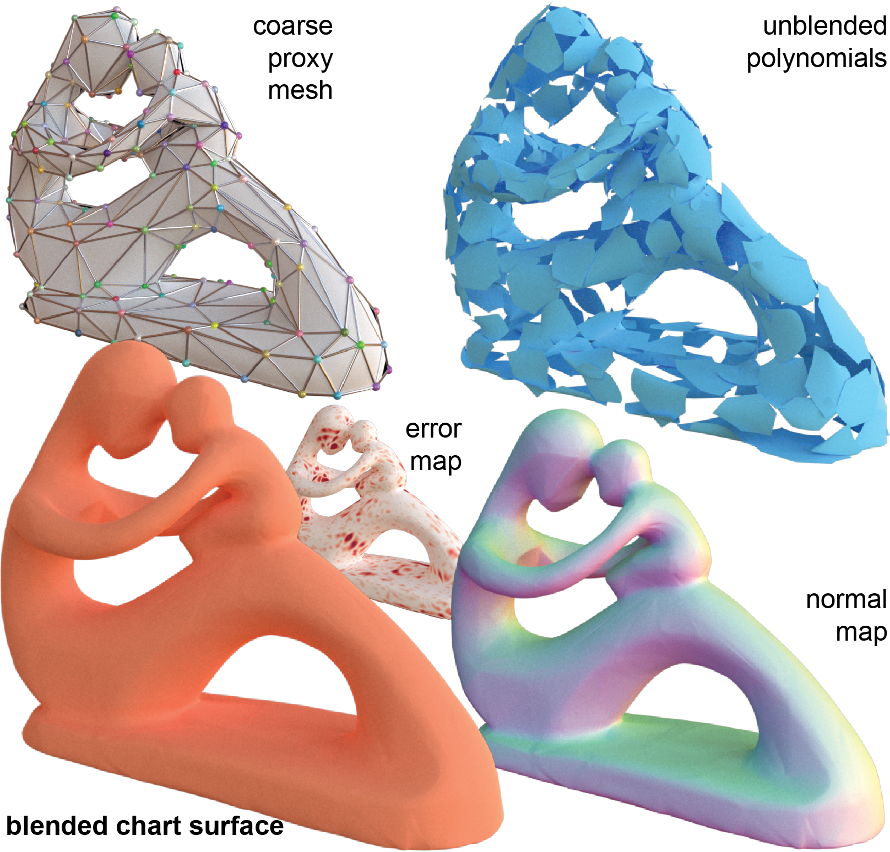
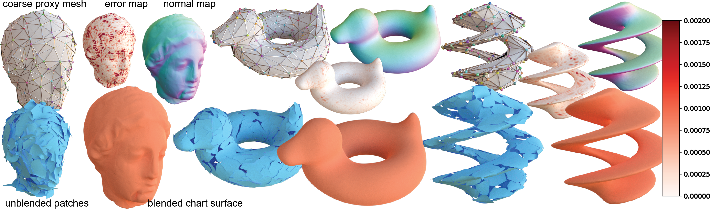
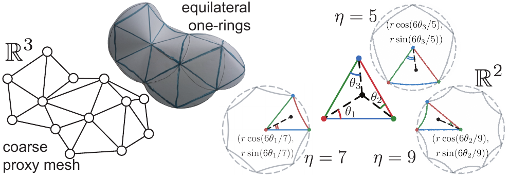
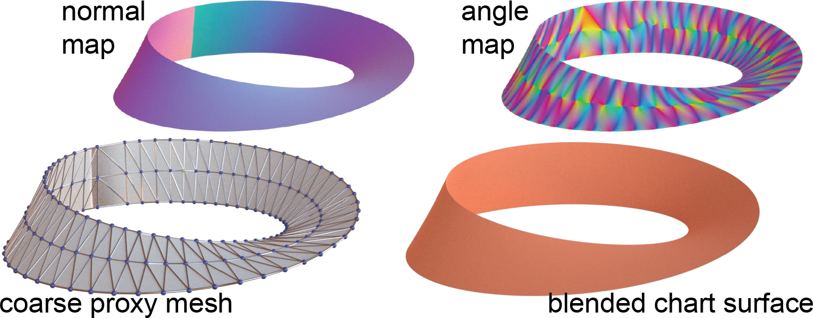
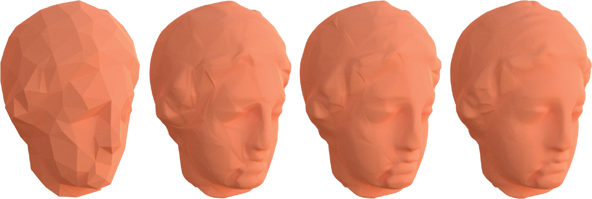

A surface representation suitable for geometry processing should be compact and explicit, provide global smoothness guarantees, support a wide range of surface topologies, and offer reliable access to differential quantities such as normals and surface energies, while remaining compatible with modern differentiable optimization. Yet existing neural representations typically sacrifice one or more of these properties. We introduce Blended Chart Surfaces (BCS), a compact, network-free, explicit representation that is smooth by construction and anchored to user-provided topology. Given a coarse proxy mesh encoding the intended surface topology and approximate geometry, Blended Chart Surfaces jointly optimize for a polynomial map at each proxy vertex using an off-the-shelf optimizer to fit to an implicit target shape, avoiding the need for an input parametrization.
We show example Blended Chart Surfaces fit to Igea, Bob, and a 'twisted torus'. For each, we display the coarse proxy mesh, the unblended per-vertex polynomial patches, the resulting blended surface, and an error map (the absolute of the target implicit field value). Reconstructions are strongest on smoother shapes like Bob and the twisted torus, with slightly more error on highly detailed geometry like Igea.

Refer to the paper for a comparison against Interpolating Splines (Djuren et al.), a closely related prior method that was designed for interpolation rather than fitting.
We build a smooth curve or surface on top of a coarse proxy — a polyline for curves, a triangle mesh for surfaces — even though that proxy is usually non-smooth, with corners and sharp edges. We focus on “function” continuity rather than “geometric” continuity (see Supplemental B.9 for the distinction).
Each proxy vertex gets its own vertex function, a low-degree polynomial. Neighboring vertex functions are stitched together with transition maps and blending functions that guarantee smoothness across overlaps by construction.
The proxy fixes the topology and rough shape; the fine details come from directly optimizing the vertex functions with Adam [Kingma & Ba 2015] against a target implicit surface (e.g., an SDF or a neural implicit field) — without needing a precomputed parametrization.

Our representation naturally accommodates difficult topologies such as open boundaries and non-orientable surfaces. The proxy mesh encodes the intended surface topology and approximate geometry, while the local polynomial patches are blended through partition-of-unity weights to recover a smooth global surface without requiring a global parametrization.
The Möbius strip example illustrates this flexibility, demonstrating that Blended Chart Surfaces extend beyond simple closed manifolds and support topology-aware fitting in challenging configurations.

Since vertex functions are just polynomials, their degree gives a natural level-of-detail hierarchy. Here we fit Igea with cubic vertex functions and then truncate the coefficients down to quadratic, linear, and constant-only variants: constant terms alone are too coarse and leave visible sharpness, while each higher degree recovers more detail, with quadratic offering a good accuracy–compression trade-off.

@article{williamson2026blended,
title={Blended Chart Surfaces: A Seamless Explicit Representation for Smooth Surface Fitting},
author={Williamson, Romy and Mitra, Niloy J.},
journal={arXiv preprint arXiv:2606.18069},
year={2026}
}